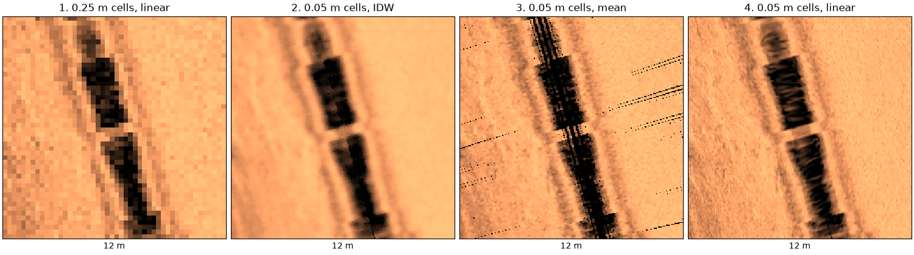
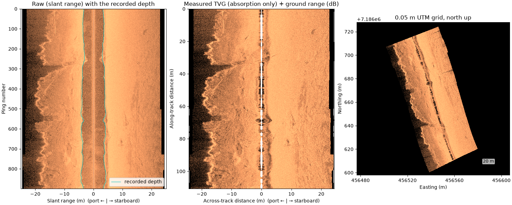

Note
Go to the end to download the full example code.
Read a Humminbird recording#

Recreational fishfinders with side imaging record far more sidescan than
survey sonars do. A Humminbird recording is a small .DAT header and a
directory of the same name with one .SON file per beam;
read_and_convert() takes the .DAT file and
converts the two side imaging beams into the same structure as a JSF,
SDF or XTF file, so every correction and export works on it unchanged.
The files record no sample interval, so the reader assumes one (see Humminbird). This example checks that assumption against the depth the unit recorded, measures the gain the unit already applied, corrects the line, and grids it on UTM as finely as the pings allow.
Data: U.S. Fish and Wildlife Service, Chena River 2022, U.S. public domain (see Example data).
Usage: python examples/gallery/plot_read_a_humminbird_recording.py [output_dir]
# 2026 rshomberg@uri.edu
import sys
import warnings
from pathlib import Path
import matplotlib.pyplot as plt
import numpy as np
from sidescanpy import analysis, datasets
from sidescanpy.export import extract_georef_window
from sidescanpy.grids import ResamplingMethod
from sidescanpy.io import read_and_convert
from sidescanpy.log import configure_logging
from sidescanpy.processing import (
apply_tvg,
compute_geometric_ranges,
correct,
interpolate_aux_onto_pings,
smooth_navigation,
)
from sidescanpy.viz import plot_gridded_raster, plot_waterfall
out = Path(sys.argv[1]) if len(sys.argv) > 1 else Path(".")
out.mkdir(parents=True, exist_ok=True)
configure_logging("INFO")
Download (once) and convert. Fetching the .DAT file also fetches its
two side imaging .SON files into usfws_chena_R00013/ beside it,
where the reader looks for them.
path = datasets.fetch("usfws_chena_R00013.DAT")
survey = read_and_convert([path], fmt="humminbird")
raw = compute_geometric_ranges(survey.get_frequency("hz_405000").dataset)
print(dict(raw.sizes))
for name in ("humminbird_recording", "humminbird_water_type", "humminbird_sample_rate_source"):
print(f"{name}: {raw.attrs[name]}")
print(f"sample_rate_hz: {raw.attrs['sample_rate_hz']:.0f}"
f" -> {1500 / (2 * raw.attrs['sample_rate_hz']) * 100:.2f} cm per sample at 1500 m/s")
23:29:18 WARNING sidescanpy.processing.sample_axis: 6559 of 6559 pings have invalid sound_vel_ms (NaN or non-positive); falling back to 1500.0 m/s
23:29:18 WARNING sidescanpy.processing.geometric: 6559 of 6559 pings have NaN pitch_deg; their pitch is taken as 0 (no along-track offset)
{'ping': 6559, 'channel': 2, 'sample': 1261}
humminbird_recording: R00013.SON
humminbird_water_type: fresh
humminbird_sample_rate_source: assumed (PyHum / PING-Mapper pixel size)
sample_rate_hz: 38594 -> 1.94 cm per sample at 1500 m/s
The samples are the unit’s 8-bit display values, after its own gain,
which the file does not record. Measure what it applied before choosing
a TVG: fit_tvg_models() fits each TVG model
to the median level against range, and
check_tvg() applies the best one and checks
that the result is flat. On this recording the unit has already removed
the spreading loss, so only absorption is left to correct; the default
30 log R would brighten the far range by several decibels.
fit = analysis.fit_tvg_models(raw)
check = analysis.check_tvg(raw, fit.tvg_params, fit.window_m)
rms = ", ".join(f"{name} {m.rms_db:.2f}" for name, m in fit.models.items())
print(f"best {fit.best} (TVG status {fit.tvg_status}); RMS in dB: {rms}")
print(f"after TVG: spread {check.spread_db:.2f} dB, trend {check.trend_db_per_10m:+.2f} dB per 10 m")
23:29:19 WARNING sidescanpy.processing.sample_axis: 6559 of 6559 pings have invalid sound_vel_ms (NaN or non-positive); falling back to 1500.0 m/s
best absorption only (TVG status spreading_only); RMS in dB: flat 1.42, absorption only 0.65, 20 log R 0.97, 20 log R + abs 1.71, 30 log R 2.08, 30 log R + abs 2.85, 40 log R 3.22, 40 log R + abs 3.99
after TVG: spread 0.64 dB, trend -1.52 dB per 10 m
Correct the line like any other: navigation onto the pings (the unit repeats each GPS fix until the next one, so the track is smoothed over 20 s), the measured TVG, slant to ground range with the recorded depth as the altitude, and a latitude and longitude for every sample. The file has no sound velocity or attitude, so the steps log that they use 1500 m/s and a level boat.
23:29:20 WARNING sidescanpy.processing.interpolate: Skipping ['heave_m', 'pitch_deg', 'roll_deg']: aux record 'attitude' is empty
23:29:20 WARNING sidescanpy.processing.sample_axis: 6559 of 6559 pings have invalid sound_vel_ms (NaN or non-positive); falling back to 1500.0 m/s
23:29:20 WARNING sidescanpy.processing.geometric: 6559 of 6559 pings have NaN pitch_deg; their pitch is taken as 0 (no along-track offset)
How fine a grid the line supports. The two directions differ. Across
track the samples are 2 cm apart. Along track the pings are 12 cm
apart: the boat made about 2.2 m/s and pinged every 54 ms. The map uses
0.05 m cells, which keeps the across-track detail, and
extract_georef_window() fills them by linear
interpolation between the samples (scipy.interpolate.griddata), so
a cell between two pings takes a value from both without blurring
either. Cells more than two ping spacings from every sample stay empty.
The ping spacing is a sampling limit, not the resolution. The along-track beam, about 2 degrees wide at 405 kHz if the transducer is 0.108 m long, is wider than the ping spacing beyond about 3.5 m range, so there the pings overlap and detail along track blurs with range.
geometry = analysis.measure_ping_geometry(corrected)
spacing = geometry.ping_spacing_m_median
print(f"ping spacing {spacing:.3f} m, sample interval {geometry.sample_interval_m:.3f} m, "
f"swath {geometry.swath_width_m:.0f} m")
CELL = 0.05
pings = slice(2900, 3800) # about 110 m of the line
stretch = corrected.isel(ping=pings)
def georef_window(size_m, centre_ping, cell, **how):
"""A north-up square of the map, ``size_m`` across, centred on a ping's position."""
with warnings.catch_warnings():
warnings.simplefilter("ignore", RuntimeWarning) # empty cells off the swath
raster, _ = extract_georef_window(stretch, round(size_m / cell), resolution_m=cell,
center_lat=float(corrected["latitude"][centre_ping]),
center_lon=float(corrected["longitude"][centre_ping]), **how)
return raster
raster = georef_window(130, 3350, CELL, interp_method="linear", max_search_radius_m=2 * spacing)
ping spacing 0.120 m, sample interval 0.019 m, swath 48 m
The same 110 m of the line three ways. Left, the raw samples against slant range: the dark band in the middle is the water column under the boat, and the cyan lines, the depth the unit recorded drawn at that slant range on each side, follow the first seabed return, so the assumed sample interval puts the seabed where the unit’s own depth sounder found it. Middle, after the measured TVG and slant to ground range: the river bank rises out of the water on the port side, about 18 m out. Right, gridded on UTM at 0.05 m, north up; at this size the panel shows only about one cell in five (the full detail is below).
fig, (ax_raw, ax_cor, ax_map) = plt.subplots(1, 3, figsize=(15, 6), width_ratios=[1, 1, 1.05],
constrained_layout=True)
plot_waterfall(raw.isel(ping=pings), x_axis="slant_range", gamma=0.5, ax=ax_raw,
title="Raw (slant range) with the recorded depth")
depth = raw["altitude_m"].values[pings]
rows = np.arange(depth.size) # the waterfall counts pings from the start of the slice
ax_raw.plot(-depth, rows, color="c", lw=0.8)
ax_raw.plot(depth, rows, color="c", lw=0.8, label="recorded depth")
ax_raw.set_xlim(-25, 25)
ax_raw.legend(loc="lower right")
plot_waterfall(corrected.isel(ping=pings), x_axis="across_track", y_axis="along_track", ax=ax_cor,
vmin_pct=2, vmax_pct=99.5, title=f"Measured TVG ({fit.best}) + ground range (dB)")
plot_gridded_raster(raster, fig=fig, ax=ax_map, cmap="copper", vmin_pct=2, vmax_pct=99.5,
show_colorbar=False, title=f"{CELL:g} m UTM grid, north up")
ax_map.xaxis.set_major_locator(plt.MaxNLocator(4))
fig.savefig(out / "humminbird_chain.png", dpi=110)

Choosing the cell size#
A 12 m square of the map, beside the track, gridded four ways. The dark band is the seabed just beside the boat’s track, where ground range stretches the samples far apart, so that is where the methods differ most.
0.25 m cells, linear interpolation: the bank’s ripples blur.
0.05 m cells, inverse-distance weighting within two ping spacings: no gaps, but each cell averages a disk of samples 0.5 m across, so the speckle and the edges smooth out.
0.05 m cells, the mean of the samples in each cell: no interpolation, so the rows between pings stay empty (the black lines). There is nothing finer than the ping spacing along track.
0.05 m cells, linear interpolation: the map above. The detail of 3 with the rows between pings filled. The streaks inside the dark band are interpolation between those sparse samples, not seabed.
choices = [(0.25, dict(interp_method="linear", max_search_radius_m=2 * spacing), "linear"),
(0.05, dict(method=ResamplingMethod.IDW, max_search_radius_m=2 * spacing), "IDW"),
(0.05, dict(method=ResamplingMethod.MEAN), "mean"),
(0.05, dict(interp_method="linear", max_search_radius_m=2 * spacing), "linear")]
fig, axes = plt.subplots(1, 4, figsize=(15, 4.2), constrained_layout=True)
for n, (ax, (cell, how, name)) in enumerate(zip(axes, choices), start=1):
plot_gridded_raster(georef_window(12, 3300, cell, **how), fig=fig, ax=ax, cmap="copper",
vmin_pct=2, vmax_pct=99.5, show_colorbar=False, show_scale_bar=False,
title=f"{n}. {cell:g} m cells, {name}")
ax.set(xticks=[], yticks=[], xlabel="12 m", ylabel="")
fig.savefig(out / "humminbird_cell_size.png", dpi=110)
Total running time of the script: (1 minutes 33.381 seconds)